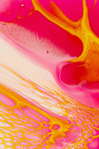
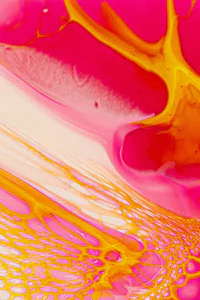
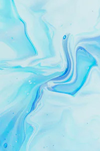
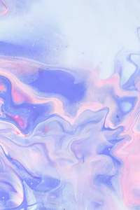
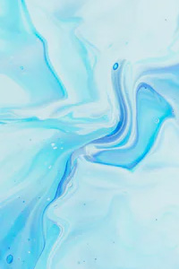
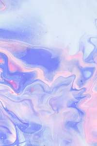
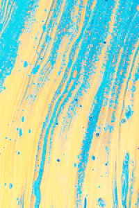
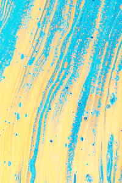

Content Preview and Menu Animation
We are Super.fluid
Flowing without any loss of kinetic energy — stir us and we form vortices that continue to rotate indefinitely.
Not all Bose–Einstein condensates can be regarded as superfluids, and not all superfluids are Bose–Einstein condensates.


 
 

  
  


Velocity
Incredible as this seems to our ordinary ideas, it is undoubtedly an understatement rather than an exaggeration of the true proportion as observed in the case of koilon.
+ Read the story

 
 
Projectiles
Incredible as this seems to our ordinary ideas, it is undoubtedly an understatement rather than an exaggeration of the true proportion as observed in the case of koilon.
+ Read the story Gravity
Incredible as this seems to our ordinary ideas, it is undoubtedly an understatement rather than an exaggeration of the true proportion as observed in the case of koilon.
+ Read the story Quasimodo
Incredible as this seems to our ordinary ideas, it is undoubtedly an understatement rather than an exaggeration of the true proportion as observed in the case of koilon.
+ Read the story Hyperbolic
Incredible as this seems to our ordinary ideas, it is undoubtedly an understatement rather than an exaggeration of the true proportion as observed in the case of koilon.
+ Read the story Ganymede
Incredible as this seems to our ordinary ideas, it is undoubtedly an understatement rather than an exaggeration of the true proportion as observed in the case of koilon.
+ Read the story